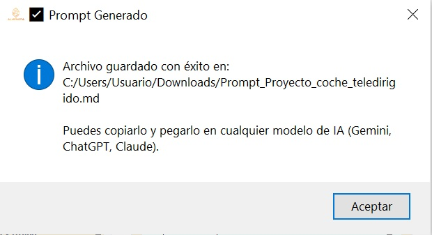

Motor de generación archivos markdown (prompt maestros)
La producción de ficheros en formato Markdown (.md) dentro del ecosistema ALMENDRA responde a una estrategia de interoperabilidad y desacoplamiento tecnológico. Estos archivos operan como "Prompts Maestros" hiper-enriquecidos. El sistema compila y estructura el entorno normativo y analítico local para que el equipo docente pueda exportarlo y ejecutarlo de forma óptima en cualquier modelo de lenguaje externo (ej., ChatGPT, Claude o entornos corporativos de Gemini), garantizando un despliegue adaptativo fuera de la aplicación.

Arquitectura y fases de generación de contexto
El programa construye los archivos Markdown de forma completamente local y estructurada (offline) mediante un motor determinista de plantillas. El flujo de trabajo se organiza en las siguientes fases técnicas:
- 1. Recopilación de Datos Curriculares y Analíticos:
- Base Curricular y Concreción LOMLOE: El sistema consulta la base de datos local para extraer la etapa, materia y saberes básicos, cruzando de forma relacional los códigos seleccionados para recuperar el texto íntegro de las Competencias Específicas y los Criterios de Evaluación en formato JSON estructurado.
- Analíticas del Aula: Si se vincula un grupo-clase, el motor analiza el histórico de calificaciones para detectar descriptores operativos debilitados (alertas críticas) y fortalezas (focos de excelencia).
- Estrategias DUA: Asocia automáticamente cada debilidad o área de ampliación con estrategias metodológicas, metas cognitivas y pautas DUA adaptadas, agregando los perfiles de diversidad de forma estrictamente anonimizada.
- 2. Inyección y Renderizado en Plantilla:
- Estructura Base: El motor carga una plantilla Markdown (.md) predefinida que contiene marcadores de posición posicionales (como {{ETAPA_EDUCATIVA}}, {{CRITERIOS_EVALUACION_JSON}} o {{PERFIL_AULA}}).
- Serialización y Sustitución: Los datos curriculares complejos se serializan a texto o JSON puro, y el sistema ejecuta una sustitución determinista de cada marcador por su bloque contextual real validado en la fase previa.
- 3. Exportación y Disponibilidad:
Genera un artefacto Markdown unificado, autocontenido y libre de dependencias externas, listo para ser copiado o importado en cualquier modelo lingüístico o entorno de autor docente.
Desacoplamiento de la capa generativa activa
En la fase de generación del archivo .md no existe intervención activa de modelos de inteligencia artificial. El valor diferencial del software radica en su comportamiento como un ingeniero de prompts determinista.
ALMENDRA absorbe la complejidad técnica del mapeo legal (LOMLOE) y el coste administrativo del análisis estadístico del grupo-clase para entregar un contenedor de contexto impecable. La meta operativa de este formato radica en maximizar la eficiencia temporal del docente, proveyendo de manera ágil y concentrada tanto el marco curricular prescriptivo como la radiografía analítica de la diversidad de su aula. El procesamiento heurístico o creativo se desplaza al exterior de la aplicación: el docente copia el código Markdown generado y lo transfiere a su interfaz de IA de preferencia. Al recibir este mapa de contexto hiper-preciso, blindado y libre de alucinaciones normativas, el modelo lingüístico externo optimiza drásticamente la calidad de sus respuestas, generando un material educativo final con un nivel de personalización y exactitud muy elevado y que mediante un modelado de directrices convencional supondría al docente una elevada carga de trabajo extra.
